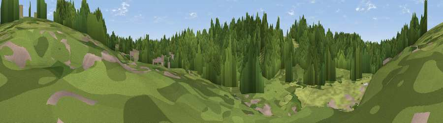

Viewpoint near Bibury
#46287 in England · top 100% of its area beats it · near BiburyThe view, rendered

A 360° render of this exact spot computed from the terrain model, tree cover and land cover — summer colours, afternoon light, calibrated against photographs of famous viewpoints. Real trees, hedges and buildings will differ in detail.
The panorama
Grey silhouette: terrain skyline in each direction (720 bearings, Earth curvature and refraction included). Dashed green: skyline with trees (+15 m) and buildings (+8 m) as obstacles. Blue strip: how far the ground is visible on each bearing.
Where the view opens
Wedge length = distance to the farthest visible ground on that bearing (vegetation-aware). Rings at 10, 25 and 50 km.
What fills the view
74% woodland · 24% grassland · 2% cropland ·
Angular shares of the visible panorama (visual magnitude), not map area. Landscape diversity 0.29 (0–1 Shannon).
Key numbers
More beautiful places nearby
The staircase of upgrades: each row has a higher view potential than everything closer. Driving times are estimates from straight-line distance, calibrated against real road routing — check an actual route before setting out.
| Place | Direction | Drive | Score |
|---|---|---|---|
| Gambra Hill | NNW · 4 km | ~9 min | 22.3 |
| Viewpoint near Aldsworth | NNE · 6 km | ~13 min | 42.8 |
| Viewpoint near Chedworth | NW · 7 km | ~14 min | 49.5 |
| Viewpoint near Rendcomb | WNW · 11 km | ~20 min | 51.2 |
| Viewpoint near Bourton-on-the-Water | NNE · 12 km | ~22 min | 54.6 |
| Pen Hill | WNW · 13 km | ~24 min | 66.4 |
| Viewpoint near Charlton Kings | NW · 18 km | ~31 min | 70.0 |
| Viewpoint near Leckhampton | NW · 19 km | ~33 min | 71.8 |
51.75874, -1.83357 · source: osm viewpoint · position refined by local search. Computed location — check access rights before visiting.